curve(dbeta(x, 3,6),0,1)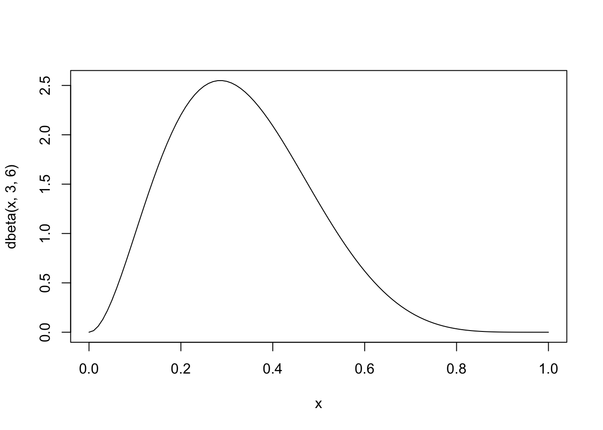
A good but technical introduction on MCMC is \citet{Andrieu-introductiontoMCMC-2003}. A short overview of sampling algorithms can be found around Fig. 7 in \citet{Hartig-Statisticalinferencestochastic-2011}. About the software, contemplate about the following: there are three types of software for Bayesian inference
Rejection sampling is the most basic Monte Carlo sampler around. In terms of computing time it is typically less efficient than MCMCs and SMCs, but it does have some advantages that make it interesting. For example, it is trivially parallelizable. Also, rejection sampling sometimes comes in handy when you want to merge an existing sample (e.g. from an MCMC) with another distribution.
The idea of rejection sampling is that you create a sample from a distribution by drawing random values, and accept them proportional to their value of the distribution.
In a Bayesian setting, this typically means that you create draws from the posterior by drawing randomly from the prior, and then accepting proportional to the likelihood. You could of course also draw randomly from the whole space, and accept from the posterior, but this would likely be less efficient.
Assume we want to draw from a beta distribution with shape parameters 6,3, which looks like this
curve(dbeta(x, 3,6),0,1)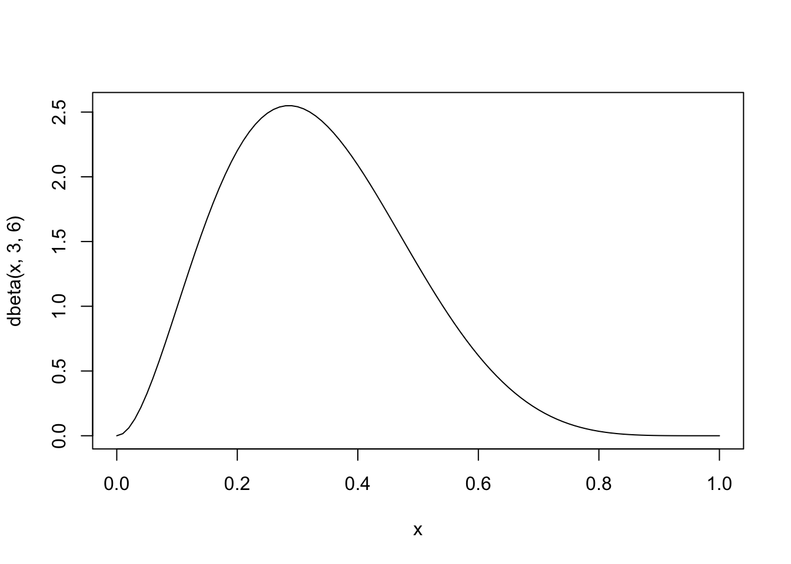
To do this, we first create a data.frame with 100000 random values between 0 and 1, and calculate their beta density values
sampled <- data.frame(proposal = runif(100000,0,1))
sampled$targetDensity <- dbeta(sampled$proposal, 3,6)Now, accept proportional to the targetDensity. It’s easiest if we calculate the highest density value, and then accept the others in relation to that
maxDens = max(sampled$targetDensity, na.rm = T)
sampled$accepted = ifelse(runif(100000,0,1) < sampled$targetDensity / maxDens, TRUE, FALSE)Plot the result
hist(sampled$proposal[sampled$accepted], freq = F, col = "grey", breaks = 100)
curve(dbeta(x, 3,6),0,1, add =T, col = "red")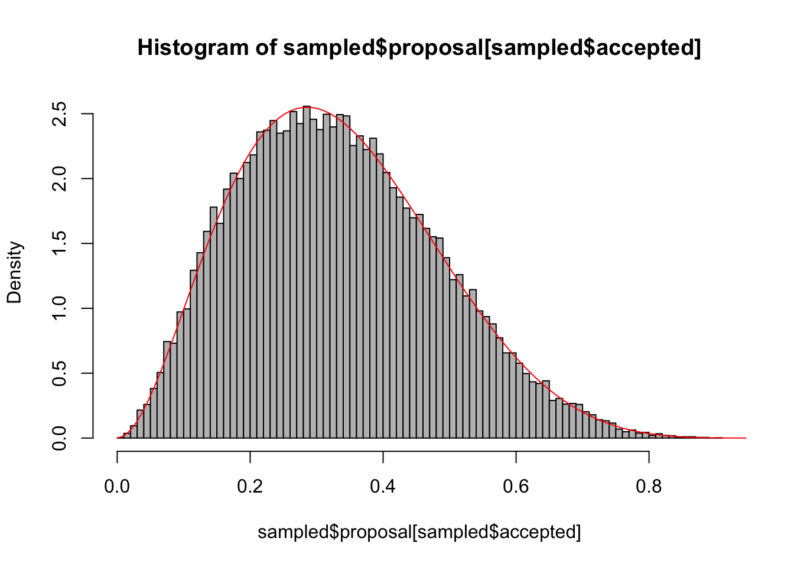
Summary: the idea of this tutorial is to understand how MCMCs are used to sample the posterior distribution in a Bayesian analysis. We will
As a first step, we create some test data that will be used to fit our model. Let’s assume a linear relationship between the predictor and the response variable, so we take a linear model and add some noise.
trueA <- 5
trueB <- 0
trueSd <- 10
sampleSize <- 31
# Create independent x-values
x <- (-(sampleSize-1)/2):((sampleSize-1)/2)
# Create dependent values according to ax + b + N(0,sd)
y <- trueA * x + trueB + rnorm(n=sampleSize,mean=0,sd=trueSd)
# Plot data
plot(x,y, main="Test Data")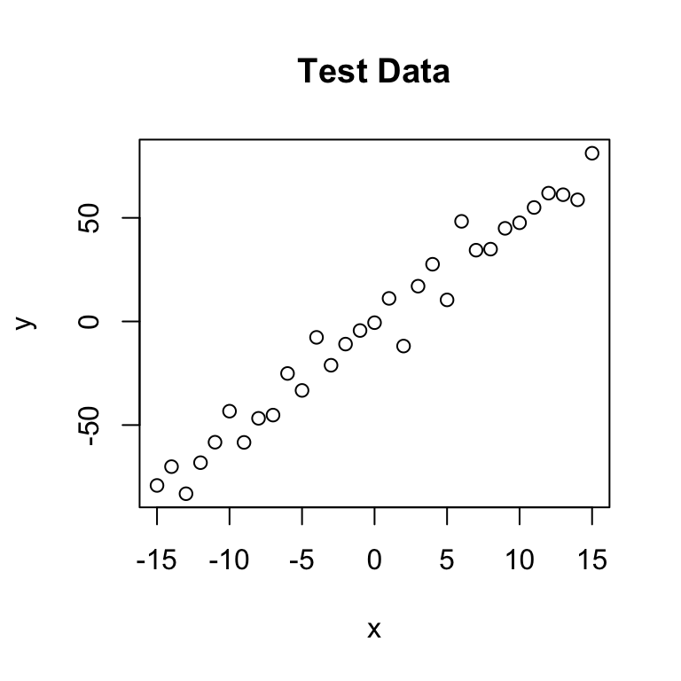
The next step is to specify the statistical model. We already know that the data was created with a linear relationship y = a*x + b between x and y and a normal error model N(0,sd) with standard deviation sd, so let’s use the same model for the fit and see if we can retrieve our original parameter values.
For estimating parameters in a Bayesian analysis, we need to derive the likelihood function for the model that we want to fit. The likelihood is the probability (density) with which we would expect the observed data to occur conditional on the parameters of the model that we look at. So, given that our linear model y = b + ax + N(0,sd) takes the parameters (a, b, sd) as an input, we have to return the probability of obtaining the test data above under this model
This sounds more complicated as it is, as you see in the code below, we simply calculate the difference between predictions y = b + ax and the observed y, and then we have to look up the probability densities (using dnorm) for such deviations to occur. As an illustration, the last lines of the code plot the Likelihood for a range of parameter values of the slope parameter a. The result should look something like the below plot.
# Likelihood function
likelihood <- function(param){
a = param[1]
b = param[2]
sd = param[3]
pred = a*x + b
singlelikelihoods = dnorm(y, mean = pred, sd = sd, log = T)
sumll = sum(singlelikelihoods)
return(sumll)
}
# Example: plot the likelihood profile of the slope a
slopevalues <- function(x){return(likelihood(c(x, trueB, trueSd)))}
slopelikelihoods <- lapply(seq(3, 7, by=.05), slopevalues )
plot (seq(3, 7, by=.05), slopelikelihoods , type="l", xlab = "values of slope parameter a", ylab = "Log likelihood")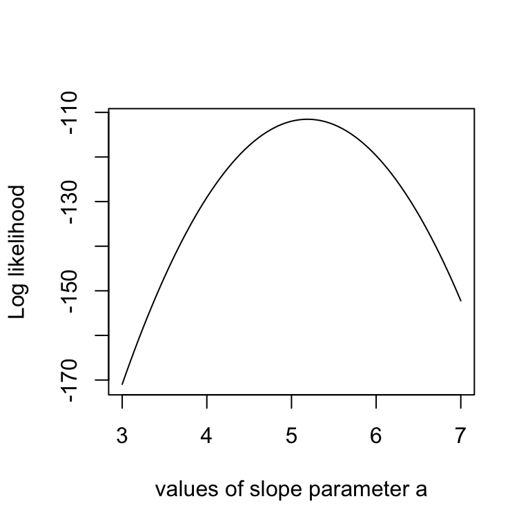
You might have noticed that I return the logarithm of the probabilities in the likelihood function, which is also the reason why I sum the probabilities of all our datapoints (the logarithm of a product equals the sum of the logarithms). Why do we do this? You don’t have to, but it’s strongly advisable because likelihoods, where a lot of small probabilities are multiplied, can get ridiculously small pretty fast (something like \(10^-34\)). At some stage, computer programs are getting into numerical rounding or underflow problems then. So, bottom-line: when you program something with likelihoods, always use logarithms!!!
As a second step, as always in Bayesian statistics, we have to specify a prior distribution for each parameter.
I use wide normal distributions for slope and intercept, a standard choice. If I would have many predictors and therefore the danger of overfitting, one could think about making them more narrow, deliberately biasing them towards 0
I am using a flat prior on 1/sd^2 (the latter expression is often called the precision), which is a standard non-informative choice for the variance. This then corresponds to a decay of the standard deviation with 1/sqrt(sd).
One would think that a flat prior on the variance would be a better idea, but one can show that this would typically lead to too much probability mass for large variances, effectively introducing a bias in the analysis. NOTE: good uniformative choices for parameters are not neccessarily flat!!!
# Prior distribution
prior <- function(param){
if (param[3] <= 0) return(-Inf)
aprior = dnorm(param[1], sd = 50, log = T)
bprior = dnorm(param[2], sd = 50, log = T)
sdprior = 1/sqrt(param[3]) + dunif(param[3], min=0, max=30, log = T)
return(aprior+bprior+sdprior)
}The product of prior and likelihood is the actual quantity the MCMC will be working on. This function is called the posterior (or to be exact, it’s called the posterior after it’s normalized, which the MCMC will do for us, but let’s not be picky for the moment). Again, here we work with the sum because we work with logarithms.
# Posterior function
posterior <- function(param){
return (likelihood(param) + prior(param))
}Now, here comes the actual Metropolis-Hastings algorithm. One of the most frequent applications of this algorithm (as in this example) is sampling from the posterior density in Bayesian statistics. In principle, however, the algorithm may be used to sample from any integrable function. So, the aim of this algorithm is to jump around in parameter space, but in a way that the probability to be at a point is proportional to the function we sample from (this is usually called the target function). In our case this is the posterior defined above.
This is achieved by:
Starting at a random parameter value
Choosing a new parameter value close to the old value based on some probability density that is called the proposal function
*Jumping to this new point with a probability p(new)/p(old), where p is the target function, and p>1 means jumping as well.
It requires a bit of mathematics to prove that this works, but for the moment I can assure you it does – when we run this algorithm, distribution of the parameters it visits converges to the target distribution p.
So, let’s get this in R:
run_metropolis_MCMC <- function(startvalue, iterations){
chain = array(dim = c(iterations+1,3))
chain[1,] = startvalue
for (i in 1:iterations){
proposal = rnorm(3,mean = chain[i,], sd= c(0.1,0.5,0.3))
probab = exp(posterior(proposal) - posterior(chain[i,]))
if (runif(1) < probab){
chain[i+1,] = proposal
}else{
chain[i+1,] = chain[i,]
}
}
return(chain)
}Again, working with the logarithms of the posterior might be a bit confusing at first, in particular when you look at the line where the acceptance probability is calculated as:
\[(probab = exp(posterior(proposal) – posterior(chain[i,])))\]
To understand why we do this: note that \(p1/p2 = exp[log(p1)-log(p2)]\)
OK, let’s run the algorithm
startvalue = c(4,0,10)
chain = run_metropolis_MCMC(startvalue, 10000)The first steps of the algorithm may be biased by the initial value, and are therefore usually discarded for the further analysis (burn-in time). To discard the first 5000 steps, and transform the chain to an mcmc object, run this
library(coda)
burnin = 5000
result <- mcmc(chain[burnin:nrow(chain),], start = burnin)The mcmc function is part of the coda R package that provides a number of standard functions for plotting and analysis of the posterior samples. For those functions to work, you need to have your output as an object of class “mcmc”, or “mcmc.list”, which we will discuss later. Coda is the standard package for this type of analysis, and most Bayesian packages in R use this class to return MCMC outputs, so you will likely come across this syntax whatever Bayesian code you are running.
Objects of class “mcmc” hold and array with the mcmc samples, and a number of additional information. You can look at the structure with str(chain), and you can transform a “mcmc” object back to a normal data-frame by data.frame(chain).
The advantage of having a coda object is that a lot of things that we typically want to do with the chain are already implemented, so for example we can simply summary() and plot() the outputs which gives some useful information on the console and a plot that should look roughly like this:
plot(result)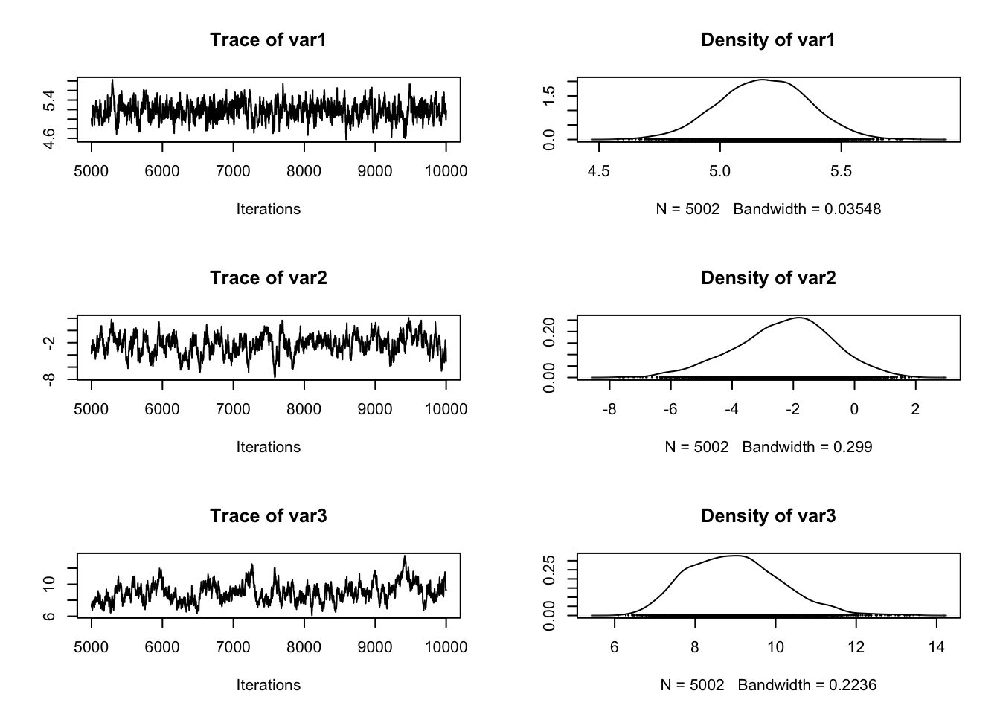
summary(result)
Iterations = 5000:10001
Thinning interval = 1
Number of chains = 1
Sample size per chain = 5002
1. Empirical mean and standard deviation for each variable,
plus standard error of the mean:
Mean SD Naive SE Time-series SE
[1,] 5.180 0.1839 0.00260 0.01171
[2,] -2.294 1.5781 0.02231 0.16545
[3,] 8.981 1.1590 0.01639 0.14718
2. Quantiles for each variable:
2.5% 25% 50% 75% 97.5%
var1 4.813 5.056 5.181 5.307 5.5304
var2 -5.649 -3.295 -2.182 -1.219 0.6498
var3 7.023 8.127 8.913 9.707 11.4433rejectionRate(result) var1 var2 var3
0.2335533 0.2335533 0.2335533 An interesting statistics provided by summary is the acceptance rate: how often was a proposal rejected by the metropolis-hastings acceptance criterion? The acceptance rate can be influenced by the proposal function: generally, the closer the proposals are, the larger the acceptance rate. Very high acceptance rates, however, are usually not beneficial: this means that the algorithms is “staying” at the same point, which results in a suboptimal probing of the parameter space (mixing). It can be shown that acceptance rates between 20% and 30% are optimal for typical applications (more on that later).
In the plot() function, each row corresponds to one parameter, so there a are two plots for each parameter. The left plot is called a trace plot – it shows the values the parameter took during the runtime of the chain. The right plot is usually called a marginal density plot. Basically, it is the (smoothened) histogram of the values in the trace-plot, i.e. the distribution of the values of the parameter in the chain.
Comparison with the normal lm:
summary(lm(y~x))
Call:
lm(formula = y ~ x)
Residuals:
Min 1Q Median 3Q Max
-19.8977 -4.0954 0.5968 4.3722 19.5387
Coefficients:
Estimate Std. Error t value Pr(>|t|)
(Intercept) -2.3579 1.5510 -1.52 0.139
x 5.1888 0.1734 29.92 <2e-16 ***
---
Signif. codes: 0 '***' 0.001 '**' 0.01 '*' 0.05 '.' 0.1 ' ' 1
Residual standard error: 8.635 on 29 degrees of freedom
Multiple R-squared: 0.9686, Adjusted R-squared: 0.9675
F-statistic: 895.4 on 1 and 29 DF, p-value: < 2.2e-16You see that we retrieve more or less the original parameters that were used to create our data, and you also see that we get a certain area around the highest posterior values that also have some support by the data, which is the Bayesian equivalent of confidence intervals.
So, what to do if there is no convergence yet? Of course, you can always run the MCMC longer, but the other option is to make it converge faster … the word that is used here is “mixing”, which basically means how well the algorithm jumps around in the parameter space … the mixing is affected by the choice of your proposal function. Two things can happen:
Let’s create both situations so that you get the picture. I’m turning back to the old data. Proposalfunction too narrow:
x <- (-(sampleSize-1)/2):((sampleSize-1)/2) + 20
y <- trueA * x + trueB + rnorm(n=sampleSize,mean=0,sd=trueSd)
proposalfunction <- function(param){
return(rnorm(3,mean = param, sd= c(0.001,0.5,0.3)))
}
startvalue = c(4,0,10)
chain1 = mcmc(run_metropolis_MCMC(startvalue, 10000)[5000:ncol(chain),], start = 5000)
chain2 = mcmc(run_metropolis_MCMC(startvalue, 10000)[5000:ncol(chain),], start = 5000)
combinedchains = mcmc.list(chain1, chain2)
plot(combinedchains)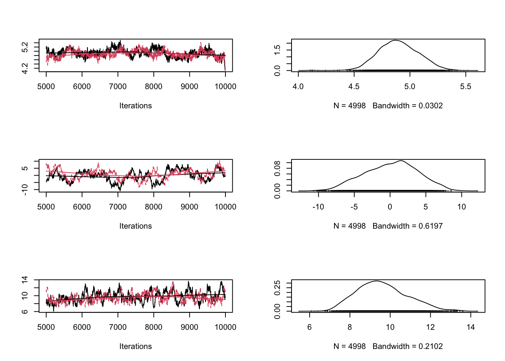
#gelman.plot(combinedchains)Proposalfunction too wide
proposalfunction <- function(param){
return(rnorm(3,mean = param, sd= c(1000,0.5,0.3)))
}
chain1 = mcmc(run_metropolis_MCMC(startvalue, 10000)[5000:ncol(chain),], start = 5000)
chain2 = mcmc(run_metropolis_MCMC(startvalue, 10000)[5000:ncol(chain),], start = 5000)
combinedchains = mcmc.list(chain1, chain2)
plot(combinedchains)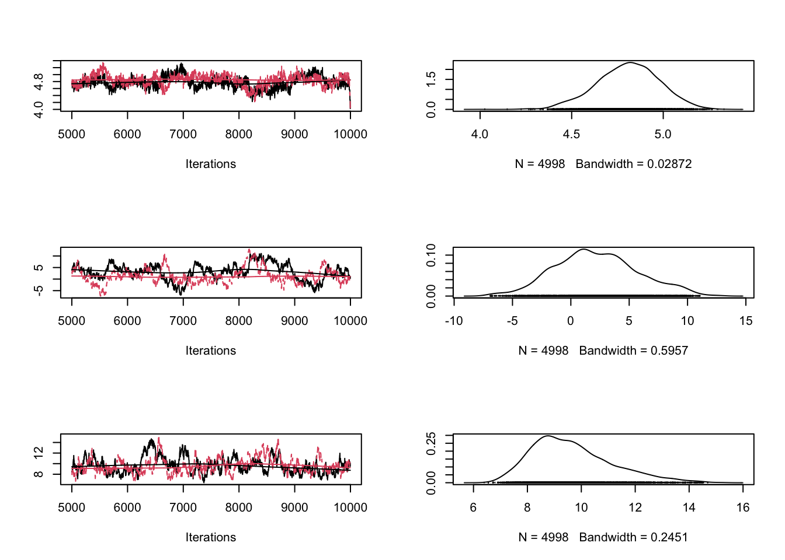
#gelman.plot(combinedchains)As displayed in the figure, these problems can be seen in the trace plots. Theoretical considerations show that an acceptance rate of 20-30% is optimal for typical target distributions, but this is in practice not so helpful because you can still have very bad mixing although being at this level by having the proposal of one parameter too narrow and the proposal of another parameter too wide. Better to look at the trace-plots of the individual parameters. Again, correlations are a problem, so if you have strong correlations in parameter space, you can get bad mixing. Using multivariate proposals that are adjusted to the correlation structure can help, but in general it is better to avoid correlations if possible. The good news at last: most of the more “professional” MCMC sampling software such as Jags or WinBugs will do these things automatically for you.
Gelman, A.; Carlin, J. B.; Stern, H. S. & Rubin, D. B. (2003) Bayesian Data Analysis
Andrieu, C.; de Freitas, N.; Doucet, A. & Jordan, M. I. (2003) An introduction to MCMC for machine learning Mach. Learning, Springer, 50, 5-43
Hartig, F.; Calabrese, J. M.; Reineking, B.; Wiegand, T. & Huth, A. (2011) Statistical inference for stochastic simulation models – theory and application Ecol. Lett., 14, 816–827.
In this previous version, the proposal function was simlply creating independent normal draws \(proposalfunction <- function(param){return(rnorm(3,mean = param, sd= c(0.1,0.5,0.3))) }\) .We change now to a multivariate normal version that will be adapted later.
library(MASS)
sig = diag(x = c(0.1,0.5,0.3), nrow=3, ncol=3)
proposalfunction <- function(param){
return(mvrnorm(1,mu = param, Sigma= sig))
}Here is the mcmc. I adapted the code slightly to allow for running the MCMC for a while, stopping, and continuing with the MCMC, which will be useful for the adaptation.
run_metropolis_MCMC <- function(iterations){
startindex = nrow(chain)
chain = rbind(chain, array(dim = c(iterations,3)))
for (i in startindex:(startindex+iterations-1)){
proposal = proposalfunction(chain[i,])
probab = exp(likelihood(proposal)+ prior(proposal) - likelihood(chain[i,])- prior(chain[i,]))
if (runif(1) < probab){
chain[i+1,] = proposal
}else{
chain[i+1,] = chain[i,]
}
}
return(chain)
}But first of all, we will just run the MCMC like before and check the convergence.
chain = array( c(4,2,8), dim = c(1,3))
# Running a non-adapted analysis with deliberately bad proposal function
# Settings for the proposal covariance matrix
sig = diag(x = c(1,1,1), nrow=3, ncol=3)
chain1 = run_metropolis_MCMC(10000)
chain2 = run_metropolis_MCMC(10000)
combinedchains = mcmc.list(mcmc(chain1), mcmc(chain2))
plot(combinedchains)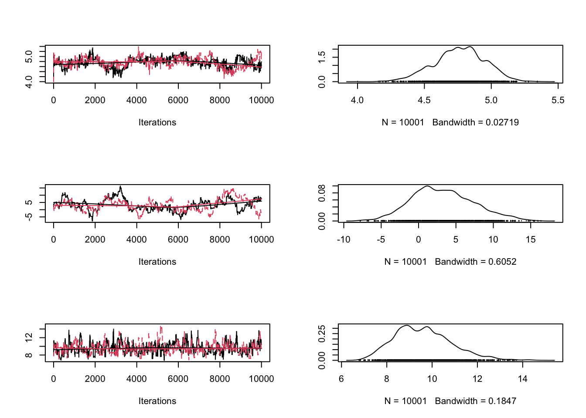
gelman.diag(combinedchains)Potential scale reduction factors:
Point est. Upper C.I.
[1,] 1.05 1.11
[2,] 1.07 1.15
[3,] 1.00 1.01
Multivariate psrf
1.02gelman.plot(combinedchains)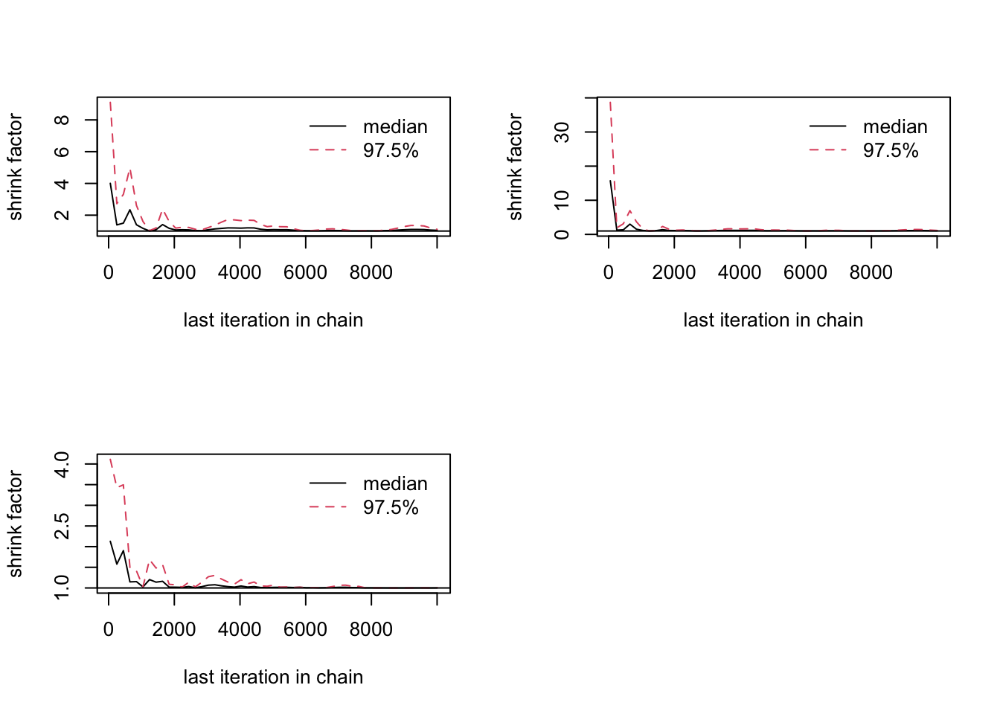
We use the samples obtained already to adjust the proposal for explanations why the scaling factor of \(2.38^2/d\) is optional (see references)
chain = array( c(4,2,8), dim = c(1,3))
chain = run_metropolis_MCMC(2000)
sig = 2.38^2 / 3 * cov(chain)
chain = run_metropolis_MCMC(2000)
sig = 2.38^2 / 3 * cov(chain)
chain = run_metropolis_MCMC(2000)
sig = 2.38^2 / 3 * cov(chain)
chain = run_metropolis_MCMC(2000)
sig = 2.38^2 / 3 * cov(chain)
chain = run_metropolis_MCMC(2000)
sig = 2.38^2 / 3 * cov(chain)
chain = array( c(4,2,8), dim = c(1,3))
chain1 = run_metropolis_MCMC(10000)
chain2 = run_metropolis_MCMC(10000)
combinedchains = mcmc.list(mcmc(chain1), mcmc(chain2))
plot(combinedchains)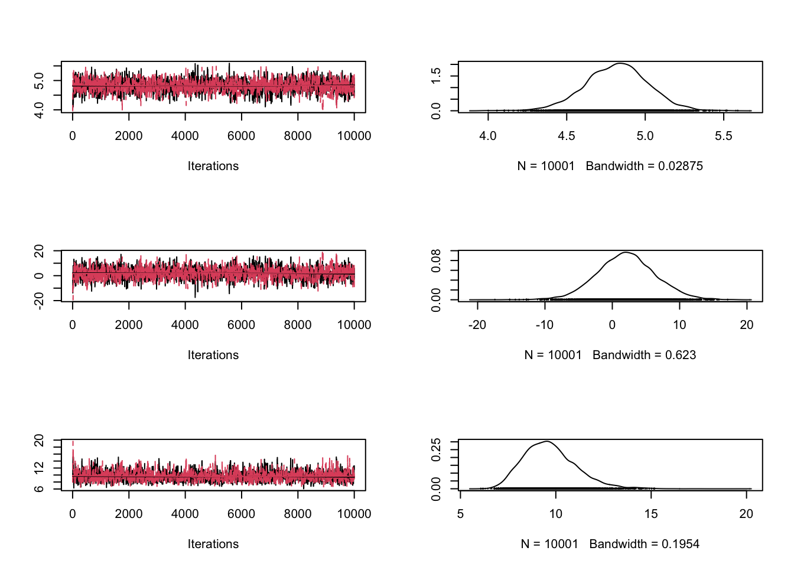
gelman.diag(combinedchains)Potential scale reduction factors:
Point est. Upper C.I.
[1,] 1 1
[2,] 1 1
[3,] 1 1
Multivariate psrf
1gelman.plot(combinedchains)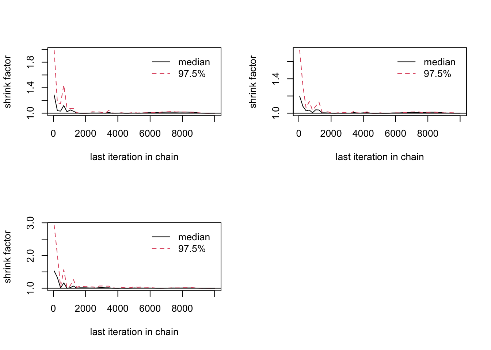
Rosenthal, J. S. (2011) Optimal proposal distributions and adaptive MCMC. Handbook of Markov Chain Monte Carlo, CRC Press.
SMC sampling is an extension of rejection sampling (see script about rejection sampling) that deals with a particular problem of rejection samplign, which is that a simple rejection sampler discards a large number of model evaluations when the area of non-vanising posterior density is very small compared to the prior volume
Similar to rejection sampling, we start with an initial sample of parameters, calculate the likelihood, and then remove parameters according to their likelihood / posterior.
Assume we want to sample from a narrow, 2-dim normal distribution with mean 0.5,0.5
likelihood <- function(x) sum(dnorm(x,0.5, 0.01, log = T))Assume our prior is unifor from 0 to 1.
prior = function(x)sum(dunif(x,0,1))Start with a random sample from the prior
initialParticles <- matrix(runif(1000,0,1), ncol = 2)Now comes the SMC. The idea is to
smc_sampler <- function(likelihood, prior, initialParticles, iterations =1, resampling = T){
particles <- initialParticles
numPar <- ncol(initialParticles)
for (i in 1:iterations){
likelihoodValues <- apply(particles, 1, likelihood)
relativeL = exp(likelihoodValues - max(likelihoodValues, na.rm = T))^(1/iterations) # dividing max to avoid numerical problems, no effect on the relative probabilities
sel = sample.int(n=length(likelihoodValues), size = length(likelihoodValues), replace = T, prob = relativeL)
particles = particles[sel,]
if (resampling == T){
proposal <- function(x) rnorm(length(x), mean = x, sd = 0.005)
particlesProposals = t(apply(particles, 1, proposal))
particlesProposalsLikelihood <- apply(particlesProposals, 1, likelihood)
jumpProb <- exp(particlesProposalsLikelihood - likelihoodValues[sel])^(i/iterations) * exp(prior(particlesProposals) - prior(particles))
accepted <- jumpProb > runif(length(particlesProposalsLikelihood), 0 ,1)
particles[accepted, ] = particlesProposals[accepted, ]
}
}
return(particles )
}Plot the result
par(mfrow = c(2,2))
finalParticles <- smc_sampler(likelihood, prior, initialParticles, iterations = 1, resampling = F)
hist(finalParticles[,1], freq = F, col = "grey", breaks = 50, xlim = c(0,1), main = "Rejection Sampler")
curve(dnorm(x,0.5, 0.01),0,1, n = 5000, add =T, col = "red")
hist(finalParticles[,2], freq = F, col = "grey", breaks = 50, xlim = c(0,1), main = "Rejection Sampler")
curve(dnorm(x,0.5, 0.01),0,1, n = 5000, add =T, col = "red")
finalParticles <- smc_sampler(likelihood, prior, initialParticles, iterations = 50)
hist(finalParticles[,1], freq = F, col = "grey", breaks = 50, xlim = c(0,1), main = "SMC Sampler")
curve(dnorm(x,0.5, 0.01),0,1, n = 5000, add =T, col = "red")
hist(finalParticles[,2], freq = F, col = "grey", breaks = 50, xlim = c(0,1), main = "SMC Sampler")
curve(dnorm(x,0.5, 0.01),0,1, n = 5000, add =T, col = "red")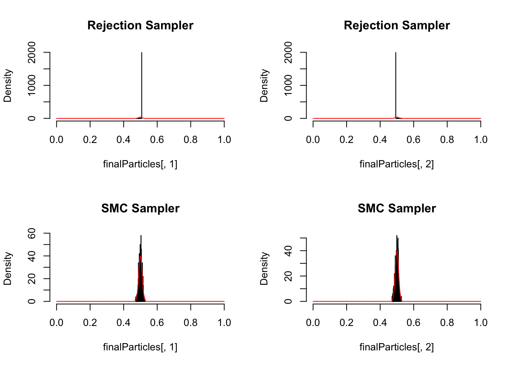
More advanced SMC methods